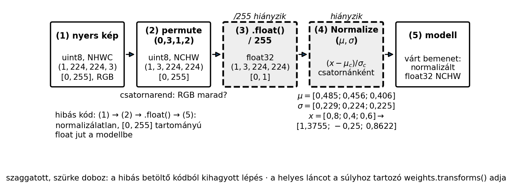

Egy előtanított modell helyes használatához három, egymástól
független kérdést kell külön megválaszolni. (1) Kompatibilis
előfeldolgozás: a bemenet reprezentációja (méret,
crop, normalizálás, csatornarend, értéktartomány) megegyezik-e azzal,
amit a súlycsomag elvár — ez dokumentációból ellenőrizhető szerződés.
(2) Adatdomén-hasonlóság: mennyire hasonlít a saját
adat a forrás tanítóadatához — ez nem garantálható, csak vizsgálható.
(3) A target teljesítmény igazolása: a modell a saját
adaton, külön target-domain értékeléssel mérve elég jó-e. Az első
feltétel teljesülése nem jelenti a forrás- és a céladat azonos
eloszlását, és az eloszláseltérés önmagában nem teszi szabálytalanná a
transzfert; csak azt jelenti, hogy a (3) mérés nem hagyható ki. Ez az
alfejezet ezt a preprocessing-szerződést járja körbe:
resize/crop, normalizálás, csatornarend, a súlycsomag enumja és a
felhasználási licenc. Előismeret a 20.2.
Finomhangolás és tanulási ráta finomhangolási anyaga: a
state_dict, a fagyasztott paraméterek és a
BatchNorm-pufferek kezelése. A 19.3. EfficientNet és
architektúraskálázás alfejezetben tárgyalt architektúra-skálázás és
a 16.3. Elméleti és effektív recepciós mező
alfejezetben levezetett recepciós mező itt abban tér vissza, hogy a
bemeneti felbontás változtatása a háló belső aktivációinak térbeli
méretét is megváltoztatja. Induló kérdés: Milyen konkrét
ellenőrzésekkel dokumentálható, hogy a letöltött súlycsomag a mi
adatunkon a várt bemeneti reprezentációt kapja, milyen korlátozott
target-domain validáció kell a teljesítmény igazolásához, és
megengedett-e jogilag a felhasználás?
Legyen a nyers képadat batch, a tanító adateloszlás (source), a felhasználáskori eloszlás (target). Preprocessing-szerződésnek nevezzük azt a leképezést, amely a nyers pixelekből a háló által várt normalizált bemenetet állítja elő. Ez legalább négy komponenst tartalmaz:
A négy komponens egy ImageNet-súlyú modell betöltésekor egyetlen csővezetékként jelenik meg; az alábbi ábra lépésenként mutatja az alakot, a dtype-ot és az értéktartományt, és megjelöli azt a két lépést, amelyet egy tipikus hibás betöltő kód kihagy.

uint8 NHWC kép → permute →
NCHW → float,
→ mean/std normalizálás → modell. A szaggatott dobozok a hibás kódból
hiányzó lépések; a (4) alatt a kézi példa pixele:
.Domain shift az az állapot, amikor
.
Ez nem önmagában hiba, hanem mérhető eltérés: az adateloszlások
különbözősége miatt a modell a target eloszláson rosszabb teljesítményt
mutathat. A súlycsomag enumja a közzétett
súlyváltozatok azonosítója (pl. IMAGENET1K_V1,
DEFAULT). A licenc a súlyok felhasználási
feltételeit rögzítő jogi dokumentum; a letölthető súly megléte nem
jelenti azt, hogy tetszőleges célra felhasználható.
A torchvision dokumentációja [D13] a modellek betöltéséhez
weights enum értékeket használ; a DEFAULT az
adott könyvtárverzió ajánlott súlyát jelöli. A [D09] oktatóanyag a saját
modell mentését és betöltését tárgyalja; ezt a saját kísérleti
checkpointra alkalmazzuk. A [P06] a ResNet-reziduális blokkokat vezeti
be; a 3.1–3.2 szakasz a reziduális tanulást és az
összefüggést definiálja (nem bizonyítja), a cikk licencfeltételeire
pedig nem tér ki.
Tegyük fel, hogy egy előtanított modell első rétege egy lineáris projekció alakban, ahol egy bemeneti sorvektor, , . A modell készítője a normalizálást értékekkel végezte, így a háló bemenete . A felhasználó ezt elhagyja, és nyers -et ad be. Ekkor a háló által számított érték , míg a szerződés szerint , ahol a -dimenziós csupa egyes oszlopvektor. A különbség:
A különbség általában nem nulla: csak akkor tűnik el, ha (itt és is alakú; utóbbi a sorösszegeinek vektora). Legyen például , , , és . Ekkor , míg . A modell más logitot ad, holott a bemenet ugyanaz a kép. Ez az ellenpélda mutatja: a normalizálás elhagyása nem egyszerűen skálázza a kimenetet, hanem a normalizálásból származó konstans eltolás () a sorösszegein keresztül additív tagot ad; a bias a különbségből kiesik.
Vegyünk egy
méretű színképet, azaz
,
.
A csatornák sorrendje PyTorchban NCHW: a tensor
[1, 3, 2, 2] alakú. Egy másik könyvtárból érkező adat lehet
NHWC, [1, 2, 2, 3]. Ha a felhasználó az NHWC tensort
NCHW-ként adja be, akkor a [1, 2, 2, 3] alakot a háló úgy
értelmezi, mint
,
,
,
bemenetet. Ez elsősorban shape-hiba: a háló
csatornát lát, miközben a modell
-at
vár. Ettől független hibatípus, amikor az alakséma megegyezik, de a
csatornák szemantikája cserélődik fel: például egy RGB kép és egy BGR
kép esetén mindkettő
,
a shape egyezik, a sorrend mégsem. Legyen az eredeti RGB pixel:
.
A BGR sorrendben ugyanez a pixel
.
A modell első konvolúciós rétegének súlyai az RGB csatornákra vannak
tanítva; a BGR sorrendben beadott bemenet esetén az első csatorna súlyai
a kék intenzitást látják, a harmadiké a vöröset. A kimeneti aktivációk
megváltoznak, mégpedig nem pusztán a csatornák felcserélésével, mert a
rákövetkező rétegek súlyai is fixek. Az elemszám (3 csatorna) és a
tensor mérete azonos, de a szemantikai tartalom hibás. Ez a példa
illusztrálja, hogy a csatornarend nem redukálható a csatornák
darabszámára.
Tekintsünk egy
méretű, 3 csatornás képet:
.
A szerződés szerint a normalizálás
,
;
ezek az ImageNet-en tanított torchvision-modellek dokumentált
RGB-csatorna-statisztikái, amelyeket a súlyokhoz tartozó
weights.transforms() pipeline ad meg [D13]. Számoljuk ki a
normalizált értékeket:
Python-ellenőrzés (a művelet egyszerű, NumPy-val vagy PyTorch-kal is
elvégezhető; az alábbi kód futtatható a lab/
munkakönyvtárból):
# lab/preprocess_check.py
import numpy as np
x = np.array([0.8, 0.4, 0.6], dtype=np.float32)
mu = np.array([0.485, 0.456, 0.406], dtype=np.float32)
sigma = np.array([0.229, 0.224, 0.225], dtype=np.float32)
x_norm = (x - mu) / sigma
print(x_norm) # [1.3755..., -0.25, 0.8622...]A futtatott kimenet (Python 3.12.3, NumPy 2.5.4, CPU):
[ 1.3755459 -0.24999997 0.8622224 ]A három érték a fenti kézi számítás 1.3755,
-0.25, 0.8622 értékét adja
float32-ban.
Ha a felhasználó a normalizálást kihagyja, és a nyers
-t
adja be, az első réteg lineáris transzformációja eltér a várttól, ahogy
az 1. ellenpéldában láttuk. A csatornarend ellenőrzésére hasonlóan: ha a
képet NHWC-ból NCHW-ba konvertáljuk, ügyelni kell arra, hogy a
transpose ne cserélje fel a színcsatornákat. Egy RGB → BGR
hiba reprodukálásához elegendő a csatornák indexelését megfordítani:
x_bgr = x[::-1]. A két vektor elemszáma azonos, de a kép
szemantikailag más.
Előfeltétel. Python 3.12 és a cnn-labor
csomag rögzített környezete (uv sync: NumPy 2.3.5; a közölt
kimenetek a könyv ellenőrző környezetéből, NumPy 2.5.4 alatt készültek),
CPU; a labor a szakasz kódját használja, a szükséges csomagokat a
laborcsomag rögzített környezete biztosítja. Bemenet a GlyphLab
lab/data/images.npy fájlja; a
lab/check_preprocessing.py futtatható
(python lab/check_preprocessing.py).
A labor célja egy súly-adat-preprocessing
eredetjegyzék elkészítése a függelék A. A
GlyphLab adatkészlet szakaszában leírt GlyphLab saját adataira és
egy lehetséges külső súlycsomagra. A GlyphLab adatok a jelen alfejezet
előtti fejezetekben már ellenőrzöttek: data/images.npy
alakja (360, 1, 24, 24), float32, intenzitás
,
grayscale. Mivel a saját modellünk ezen az adaton tanult, a
preprocessing-szerződés a következő:
A külső súlyoknál a csatornaszám is a preprocessing-szerződés része: egy ImageNet-en tanított modell háromcsatornás bemenetet vár, a GlyphLab viszont egycsatornás. Három lehetőség van: (i) a grayscale képet három csatornára ismételjük, ekkor a modell fut, de az első réteg RGB-re tanult súlyai nem grayscale-re optimalizáltak; (ii) az első konvolúciót egy bemeneti csatornára cseréljük, ekkor az első réteg előtanított súlya elveszik, a többi rétegé megmarad; (iii) eleve grayscale-re tanított súlycsomagot választunk. A választást és annak következményét az eredetjegyzékben rögzíteni kell.
Ezt a szerződést a lab/preprocessing_ledger.md fájlban
rögzítjük. A fájl tartalma:
# Preprocessing eredetjegyzék – GlyphLab
| Mező | Érték | Ellenőrzés |
|---|---|---|
| Adatfájl | data/images.npy | quickcheck.py |
| Alak | (360, 1, 24, 24) | kézi |
| dtype | float32 | kézi |
| Intenzitás tartomány | [0, 1] | min/max |
| Normalizálás | nincs | – |
| Csatornarend | NCHW | – |
| Súly forrása | saját training, seed 20261020 | state_dict |
| Licenc | saját, oktatási célra | – |A táblázat Ellenőrzés oszlopában a kézi a
szerződés kézi egyeztetését jelöli, a – pedig azt, hogy az
adott mezőt nincs automatikus ellenőrzés, csak a szerződés rögzíti.
A licencellenőrzéshez a külső súlyok esetén a [D13] és [P06] forrásokat kell használni. Az előtanított súlyok felhasználási feltételei modell- és súlyváltozatonként eltérhetnek; a pontos licencet a modellkatalógus és a súlyok eredeti forrása alapján, még letöltés vagy továbbadás előtt kell rögzíteni. A puszta katalógusbeli elérhetőség nem jelent korlátlan újrafelhasználási jogosultságot. A [P06] cikk esetében az általunk elérhető arXiv-változatban nem találtunk licencszekciót; ez azonban nem jogi licencnyilatkozat, ezért a licencet a kiadói/szerzői forrásból kell ellenőrizni. A labor elvárt eredménye tehát:
preprocessing_ledger.md fájl elkészítése.license_checks.md fájl, amely rögzíti: (a) a
GlyphLab saját súlyainak oktatási felhasználása; (b) a torchvision
modellkatalógus [D13] felhasznált súlyváltozatának licencfeltételeit;
(c) a [P06] licenc hiányának megjelölését.Fontos: a saját modellünk súlyaira a saját licencdöntésünk vonatkozik, amelyet szintén rögzíteni kell az eredetjegyzékben; a külső súlyokra vonatkozó állításokat pedig csak a forrás tényleges elolvasása után tehet. A labor kódja nem igényel külső letöltést; a GlyphLab adatok helyben elérhetők. Az alábbi ellenőrző kód a preprocessing-szerződés betartását teszteli:
# lab/check_preprocessing.py
import numpy as np
from pathlib import Path
BASE = Path(__file__).resolve().parent # lab/
images = np.load(BASE / "data/images.npy")
assert images.dtype == np.float32
assert images.shape == (360, 1, 24, 24)
assert images.min() >= 0.0 and images.max() <= 1.0
print("Preprocessing-szerződés teljesül: [0,1], float32, NCHW, alak (360,1,24,24)")Ez a kód bármely munkakönyvtárból futtatható:
python lab/check_preprocessing.py. A futtatás kimenete
(Python 3.12.3, NumPy 2.5.4, CPU, a rögzített lab/data
könyvtáron):
Preprocessing-szerződés teljesül: [0,1], float32, NCHW, alak (360,1,24,24)Az állításokat a laborcsomag quickcheck.py ellenőrzője
is megerősíti (a szkriptet és a referencia-lenyomatokat lásd A. A GlyphLab adatkészlet).
F1 – fogalmi (1. nehézség). Mit jelent a preprocessing-szerződés négy komponense? Adjon mindegyikre egy-egy mondatos magyarázatot, és egy példát, ahol a komponens elhanyagolása hibához vezet.
F2 – levezetési (2. nehézség). Legyen az előtanított modell első rétege a fenti 1. ellenpélda szerint, , , , normalizálás . A felhasználó bemenete . Számítsa ki -t és -et, és igazolja a különbséget.
F3 – implementációs (2. nehézség). Írjon
Python-kódot (lab/preprocess_normalize.py), amely beolvassa
a GlyphLab data/images.npy-t, ellenőrzi a dtype-ot és a
tartományt, majd alkalmazza a
normalizálást, és elmenti data/images_norm.npy néven. A kód
tartalmazzon input-ellenőrzést és a kimenet min/max értékének kiírását.
A feladat hipotetikus normalizálást mutat be: a GlyphLab saját
modelljének szerződése normalizálás nélküli, ezért az
images_norm.npy nem része a GlyphLab tanítási
pipeline-nak.
F4 – hibakeresési (3. nehézség). Tegyük fel, hogy a
weights.pth egy 224×224-es bemenetre,
tartományra és ImageNet mean/std normalizálásra tanított ResNet-18
súlya. A következő kód ezt tölti be, de hibás. Azonosítsa a hibát,
magyarázza el, miért sérti meg a preprocessing-szerződést, és milyen
értelemben nevezhető az eltérés domain shiftnek.
import torch
from torchvision import models
model = models.resnet18(weights=None)
model.load_state_dict(torch.load("weights.pth", weights_only=True))
model.eval() # inference: a BatchNorm a futó buffert használja
# A felhasználó saját adatai NHWC formátumban, [0,255] uint8.
image = torch.randint(0, 256, (1, 224, 224, 3), dtype=torch.uint8)
image = image.permute(0, 3, 1, 2).float()
with torch.no_grad():
logits = model(image)F5 – kísérlettervezési (2. nehézség). Tervezzen egy kísérletet, amely a GlyphLab adatokon méri a domain shift hatását, ha a bemeneti intenzitásokat lineárisan átskálázzuk -ből -be. Adja meg a protokollt, a baseline-t, a metrikát és az érvényességi korlátot. (A futást nem kell elvégezni, csak a tervet leírni.) A beadandó terv kötelező elemei: hipotézis, a változó tényező, kontroll (baseline), metrika és megfigyelési egység, a seedek száma és konkrét értékei, számszerű döntési szabály, valamint erőforráskeret.
F1. A négy komponens: (1) geometriai előkészítés – a térbeli méret rögzítése; hiba: ha a háló -re tanult, és -t kap, a konvolúciós és pooling-rétegek outputmérete a 14.1. Stride, padding, dilation és kimeneti méret képlete szerint összezsugorodik, a globális pooling vagy a teljesen kapcsolt fej bemeneti dimenziója megváltozik, és a forward vagy hibára fut, vagy más alakú jellemzőt ad. (2) Normalizálás – a csatornánkénti közép és szórás levonása; hiba: a nyers [0,255] bemenet a bias interakciója miatt eltolja a logiteket (1. ellenpélda); számszerűen a 255-szörös skálázás a lineáris réteg kimenetének tagját és a -re vonatkozó gradiensét is 255-tel szorozza, a bias tag változatlan marad. (3) Csatornarend – NCHW vs NHWC; hiba: RGB–BGR felcserélés azonos elemszám mellett más színinformációt ad. (4) Értéktartomány – [0,1] vagy [0,255]; hiba: a skálázás elmaradása a fenti 255-szörös eltolást okozza, ami nagy, rosszul kalibrált logiteket ad.
F2. A normalizálás: . esetén . . Ekkor . A különbség . Ez megegyezik a korábbi levezetéssel: . Alakellenőrzés: skalár, mert .
F3. A kód:
# lab/preprocess_normalize.py
import numpy as np
from pathlib import Path
BASE = Path(__file__).resolve().parent # lab/
images = np.load(BASE / "data/images.npy")
assert images.dtype == np.float32
assert images.min() >= 0.0 and images.max() <= 1.0
mu, sigma = 0.5, 0.25
norm = (images - mu) / sigma
assert norm.dtype == np.float32
print(f"Eredeti tartomány: [{images.min():.3f}, {images.max():.3f}]")
print(f"Normalizált tartomány: [{norm.min():.3f}, {norm.max():.3f}]")
np.save(BASE / "data/images_norm.npy", norm)A futtatott kimenet (Python 3.12.3, NumPy 2.5.4, CPU):
Eredeti tartomány: [0.000, 1.000]
Normalizált tartomány: [-2.000, 2.000]Ellenőrzés: a bemenet
tartománya miatt a normalizált értékek
közé esnek; a kód ezt kiírja, és az assert-ek a dtype-ot és
a bemeneti tartományt is ellenőrzik. A feladat hipotetikus normalizálást
mutat be: a GlyphLab saját modelljének szerződése normalizálás nélküli,
ezért a létrehozott images_norm.npy nem része a GlyphLab
tanítási pipeline-nak.
F4. A permute(0, 3, 1, 2) NHWC → NCHW
átalakítás helyes. A hiba a preprocessing-szerződés megszegése: (a) a
uint8 értékeket /255 skálázás nélkül konvertálja floatra;
(b) elmarad az ImageNet mean/std normalizálás. Az előírt pipeline-t a
torchvision a súlyokhoz tartozó weights.transforms()
hívásával adja meg [D13]; ez végzi a resize/cropot, a
ToTensor-t (amely a /255 skálázást is
tartalmazza) és a Normalize-t az ImageNet
,
értékeivel. Ez a hiba a preprocessing-szerződés
megsértése, nem feltétlenül domain shift a szigorú
értelemben: a mögöttes adatok eloszlása azonos lehet, csak a bemeneti
reprezentáció lesz más, mint amire a súlyok tanultak. A következményt
akkor írhatjuk le domain shiftként, ha a helyes preprocessing
után is eltér a target jellemzőinek eloszlása a source-tól; itt a hiba
önmagában is elrontja a bemenetet. A javítás:
image.float() / 255.0, majd az előírt mean/std alkalmazása,
vagy a weights.transforms() használata; a csatornasorrendet
is ellenőrizni kell (a permute után RGB maradt-e). A
model.eval() hívás szándékosan szerepel a kódban, hogy a
példa csak a jelzett preprocessing-hibát mutassa: a BatchNorm futó
buffere így nem változik, a hiba nem abból ered.
F5. Kísérleti terv. A GlyphLab a 20.1. Feature extractor és új fej és a függelék A. A GlyphLab adatkészlet szerinti procedurálisan
generált, szintetikus adat: 180 jelenet × 2 nézet = 360 kép, 24×24,
egycsatornás, három osztállyal (vertical,
horizontal, diagonal); a modell a fejezet
laborjában használt, már betanított GlyphLab-CNN (a 20.1 MiniCNN
architektúra). (a) Baseline: a betanított CNN per-image pontossága a
teszt split 60 képén; a per-image pontosság a helyes előrejelzések
aránya, a macro-F1 pedig a három osztály F1-értékének átlaga. (b)
Kezelés: a tesztképek intenzitásait
módon átskálázzuk, így a tartomány
lesz; a transzformáció determinisztikus, ezért önmagában nem igényel
seedet. (c) Ismétlés: a CNN-t három különböző seeddel újratanítjuk, és
mindegyik modellt kiértékeljük az eredeti és az átskálázott teszten; a
páros különbségek átlagát és szórását (vagy bootstrap
konfidenciaintervallumát) adjuk meg, mert a szórás a tanítás
seed-érzékenységéből származik, nem a determinisztikus skálázásból. (d)
Érvényességi korlát: a GlyphLab szintetikus adat, ezért az eredmény nem
általánosítható természetes képekre; az intenzitás-skálázás nem azonos
egy valódi domain shift minden összetevőjével (például a hátterek,
textúrák és zaj változása nincs benne), így a mérés csak ezt az egy
shift-dimenziót izolálja.
Kötelező elemek kiegészítve. Seedek: 20261020, 20261021,
20261022 (minden karra azonosak). Döntési szabály (előre rögzítve): a
kezelt változatot csak akkor tekintjük jobbnak, ha az elsődleges metrika
seedenként párosított különbségének jelenetszintű bootstrap 95%-os
intervalluma
(,
np.random.default_rng(0)) teljesen a javulás oldalán van;
különben nem állítunk különbséget. Erőforráskeret: CPU, 1 szál,
float32; a futások számát (karok × seedek) és az
epochszámot a terv rögzíti, a tényleges futásidőt a napló méri.
A leggyakoribb tévedés: „A letölthető súly automatikusan
minden célra engedélyezett modell.” Ez hamis. A súlyok
letöltése nem jogosít fel semmilyen felhasználásra; a licencet a
terjesztő határozza meg. Például a torchvision súlyaihoz tartozó
licencfeltételeket a [D13] modellkatalógus és a súlyok eredeti forrása
alapján kell ellenőrizni; ezek nem mindig azonosak a modell kutatási
cikkének licencével. A [P06] ResNet esetében az általunk elérhető
arXiv-változatban nem találtunk licencszekciót; a súlylicenceket ettől
függetlenül, külön kell ellenőrizni. Ha valaki kereskedelmi termékben
használja a súlyokat anélkül, hogy tisztázta volna a licencfeltételeket,
a felhasználás jogi és etikai kockázatot hordoz. A helyes eljárás: a
súlycsomag mellékelt LICENSE fájlját vagy a terjesztő
weboldalán feltüntetett feltételeket kell alapul venni, és rögzíteni az
eredetjegyzékben.
Ellenőrizze: (1) a bemeneti tensor alakja NCHW, dtype float32,
tartomány [0,1]; (2) ha a szerződés normalizálást ír elő, akkor a mean
és std vektorok csatornánkénti sorrendje megegyezik a súlyok tanításakor
használttal; (3) a licencre vonatkozó állításokat csak forrás alapján
tegye, és a hiányzó ellenőrzéseket jelölje meg. Visszautalás a 20.2. Finomhangolás és tanulási ráta alfejezetre: a
state_dict betöltésekor a weights_only=True
opció csökkenti a deszerializációs kockázatot, de nem oldja meg a
preprocessing problémát; a BatchNorm-pufferek eval módban a tanítás
alatt frissített running statisztikákat használják.
A preprocessing-szerződés rögzíti a bemeneti képek geometriai méretét, normalizálását, csatornarendjét és értéktartományát. A rossz normalizálás és az azonos elemszámú, de hibás csatornarend konkrét ellenpéldákkal igazolhatóan megváltoztatja a modell kimenetét. A domain shift a forrás- és céleloszlás eltérését jelenti, és a teljesítmény romlásához vezethet; a helyes előfeldolgozás ezt nem zárja ki, ezért a target teljesítményt külön, a céladaton kell mérni. A súlycsomag enumja azonosítja a súlyváltozatot, a licenc pedig a felhasználás feltételeit; a letölthető súly nem automatikusan engedélyez minden célra. A labor feladata a GlyphLab adatokra az eredetjegyzék elkészítése; a külső súlyok licencellenőrzését forrásalapú feladatként jelöltük meg.
A következő egység 20.4. V. ellenőrző pont: indokolt CNN-választás az V. ellenőrző pont: ott a teljes CNN-választást indokolni kell, a preprocessing-szerződést, a finomhangolási stratégiát és a licencet együttesen kell értékelni. A licencfeltételt a használat előtt ellenőrizni kell.
Források: